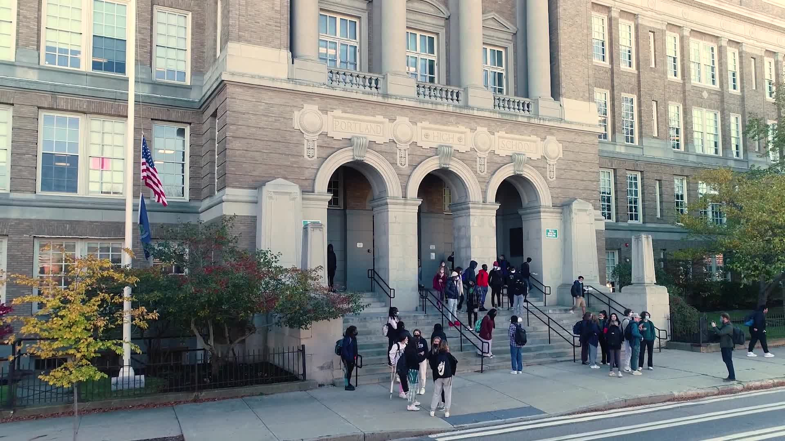

About PetConnect
PetConnect is a project that was created for my Honors Web Development class. The goal of this assignment was to create a final website using everything we have learned throughout the year. We were allowed to base this site on whatever topic we so choose and I chose to make a pet adoption site. I landed on this topic because I like cats and wanted to do something involving animals, and I thought that since I’m not able to have a pet as of now, why don’t I help other people give these pets a home? My goal for this project was to create a website that would allow the viewer to find pets that were near them and be given information regarding adopting them.
- David Tit, Student of Portland High School

Portland High School